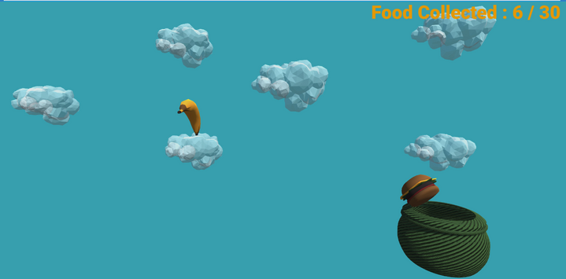

Food Storm
While creating games just for the complete goal of entertaining players was fun, I wanted a few of my games to be educational and narrow down on important issues. A global issue that is still a massive problem today is food wastage. In order to spread awareness of this issue, I created Food Storm, a 3-D game that was built using the Unity game engine and C#. The game features U.I systems such as pause menus, object animations, and player customization options.
